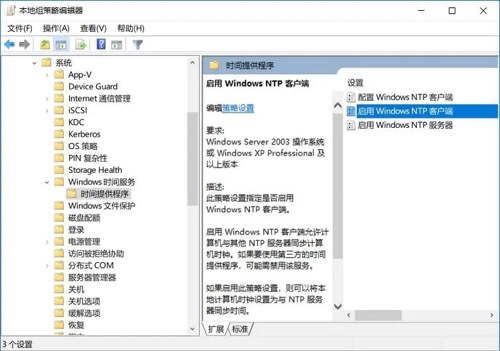
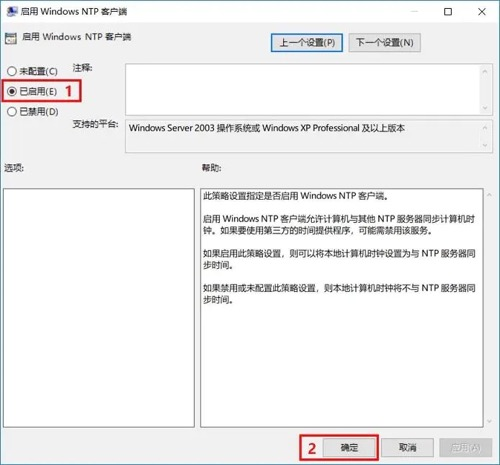
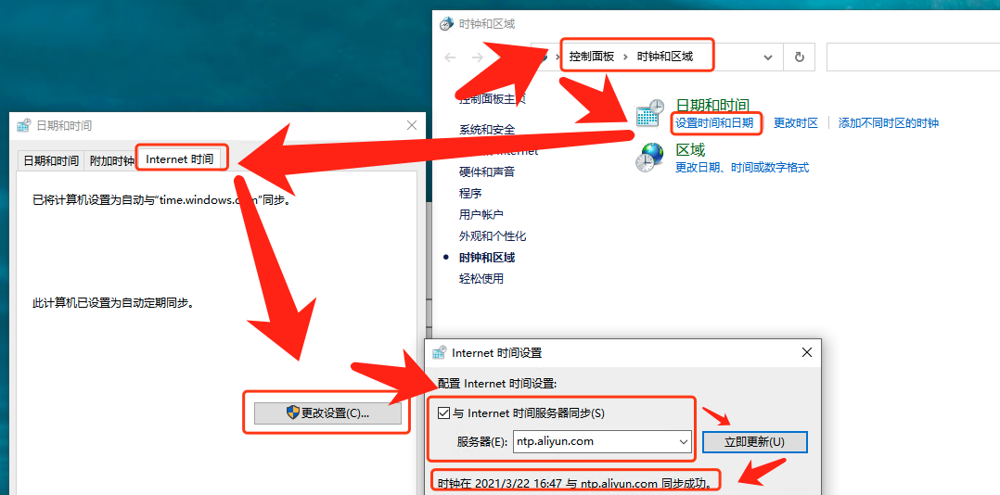
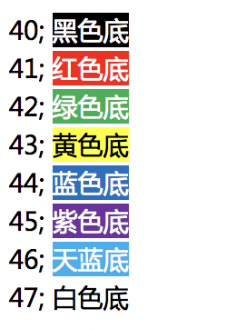
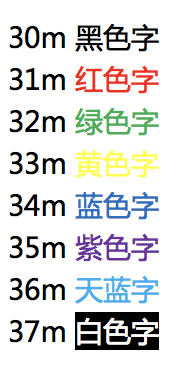

1、SSH key加密算法
RSA，DSA，ECDSA，EdDSA和Ed25519都用于数字签名，但只有RSA也可以用于加密。根据数学特性，这四种类型又可以分为两大类，dsa/rsa是一类，ecdsa/ed25519是一类，后者算法更先进。
RSA（Rivest–Shamir–Adleman）：是最早的公钥密码系统之一，被广泛用于安全数据传输。它的安全性取决于整数分解，因此永远不需要安全的RNG（随机数生成器）。与DSA相比，RSA的签名验证速度更快，但生成速度较慢。
DSA（数字签名算法）：是用于数字签名的联邦信息处理标准。它的安全性取决于离散的对数问题。与RSA相比，DSA的签名生成速度更快，但验证速度较慢。如果使用错误的数字生成器，可能会破坏安全性。从OpenSSH 7.0开始，默认情况下SSH不再支持DSA密钥（ssh-dss）。
ECDSA（椭圆曲线数字签名算法）：是DSA（数字签名算法）的椭圆曲线实现。椭圆曲线密码术能够以较小的密钥提供与RSA相对相同的安全级别。它还具有DSA对不良RNG敏感的缺点。dsa因为安全问题，已不再使用了。ecdsa因为政治原因和技术原因，也不推荐使用
EdDSA（爱德华兹曲线数字签名算法）：是一种使用基于扭曲爱德华兹曲线的Schnorr签名变体的数字签名方案。签名创建在EdDSA中是确定性的，其安全性是基于某些离散对数问题的难处理性，因此它比DSA和ECDSA更安全，后者要求每个签名都具有高质量的随机性。
Ed25519：是EdDSA签名方案，但使用SHA-512 / 256和Curve25519；它是一条安全的椭圆形曲线，比DSA，ECDSA和EdDSA 提供更好的安全性，并且具有更好的性能（人为注意）。ed25519是目前最安全、加解密速度最快的key类型，由于其数学特性，它的key的长度比rsa小很多，优先推荐使用。它目前唯一的问题就是兼容性，即在旧版本的ssh工具集中可能无法使用。
ssh-keygen -t ed25519 -C "curiouser@curiouser.com" -f ./id_ed25519
如果可以的话，优先选择ed25519，否则选择rsa。
参考：
- https://security.stackexchange.com/questions/90077/ssh-key-ed25519-vs-rsa
- https://www.cnblogs.com/librarookie/p/15389876.html
2、bash不显示路径
命令行会变成-bash-3.2$主要原因可能是用户主目录下的配置文件丢失
# 方式一
cp -a /etc/skel/. ~
# 方式二
echo "export PS1='[\u@\h \W]\$'" >> ~/.bash_profile ;\
source ~/.bash_profile
3、同时监控多个文件
tail -f file1 file2
4、查看网卡
# 方式一
ifconfig -a
# 方式二
cat /proc/net/dev
5、cp目录下的带隐藏文件的子目录
cp -R /home/test/* /tmp/test
/home/test下的隐藏文件都不会被拷贝，子目录下的隐藏文件倒是会的
cp -R /home/test/. /tmp/test
cp的时候有重复的文件需要覆盖时会让不停的输入yes来确认，可以使用yes|
yes|cp -r /home/test/. /tmp/test
6、获取出口IP地址
curl http://members.3322.org/dyndns/getip
curl cip.cc
curl myip.ipip.net
curl ifconfig.me
curl ipinfo.io
curl ipinfo.io/ip
curl icanhazip.com
curl ifconfig.me/ip ; echo
7、ISO自动挂载
echo "/mnt/iso/CentOS-7-x86_64-Minimal-1804.iso /mnt/cdrom iso9660 defaults,loop 0 0" >> /etc/fstab && \
mount -a && \
df -mh
8、查看系统版本号和内核信息
cat /proc/version
uname -a
lsb_release -a
cat /etc/redhat-release
cat /etc/issue
rpm -q redhat-release
9、查看物理CPU个数、核数、逻辑CPU个数
CPU总核数 = 物理CPU个数 * 每颗物理CPU的核数
总逻辑CPU数 = 物理CPU个数 * 每颗物理CPU的核数 * 超线程数
# 查看CPU信息（型号）
cat /proc/cpuinfo | grep name | cut -f2 -d: | uniq -c
# 查看物理CPU个数
cat /proc/cpuinfo| grep "physical id"| sort| uniq| wc -l
# 查看每个物理CPU中core的个数(即核数)
cat /proc/cpuinfo| grep "cpu cores"| uniq
# 查看逻辑CPU的个数
cat /proc/cpuinfo| grep "processor"| wc -l
10、Linux缓存
cached是cpu与内存间的，buffer是内存与磁盘间的，都是为了解决速度不对等的问题。buffer是即将要被写入磁盘的，而cache是被从磁盘中读出来的
- buff：作为buffer cache的内存，是块设备的读写缓冲区
- cache：作为page cache的内存，文件系统的cache。Buffer cache是针对磁盘块的缓存，也就是在没有文件系统的情况下，直接对磁盘进行操作的数据会缓存到buffer cache中。
- pagecache：页面缓存（pagecache）可以包含磁盘块的任何内存映射。这可以是缓冲I/O，内存映射文件，可执行文件的分页区域——操作系统可以从文件保存在内存中的任何内容。Page cache实际上是针对文件系统的，是文件的缓存，在文件层面上的数据会缓存到page cache。
- dentries：表示目录的数据结构
- inodes：表示文件的数据结构
#内核配置接口 /proc/sys/vm/drop_caches 可以允许用户手动清理cache来达到释放内存的作用，这个文件有三个值：1、2、3（默认值为0）
#释放pagecache
echo 1 > /proc/sys/vm/drop_caches
#释放dentries、inodes
echo 2 > /proc/sys/vm/drop_caches
#释放pagecache、dentries、inodes
echo 3 > /proc/sys/vm/drop_caches
11、设置代理
$> bash -c 'cat >> /etc/profile <<EOF
# HTTP协议使用代理服务器地址
export http_proxy=http://1.2.3.4:3128
# HTTPS协议使用代理服务器地址
export https_proxy=https://1.2.3.4:3128
# FTP协议使用代理服务器地址
export https_proxy=https://1.2.3.4:3128
# 不使用代理的IP或主机
export no_proxy=.abc.com,127.0.0.0/8,192.168.0.0/16,.local,localhost,127.0.0.1
export HTTP_PROXY="http://1.2.3.4:3128"
export HTTPS_PROXY="http://1.2.3.4:3128"
export NO_PROXY="192.168.0.0/16,.taobao.com,.okd311.curiouser.com"
export
EOF' ;\
sed -i '/^##/d' /etc/profile ;\
source /etc/profile
注意：
当使用“export http_proxy”和“export https_proxy”设置代理时，curl默认所有的请求都是走的代理，请求域名不通过/etc/hosts解析。
所以当有需求curl命令不走代理，通过/etc/hosts解析时，代理设置要通过“export HTTP_PROXY”和“export HTTPS_PROXY”设置。（原因是url.c（版本7.39中的第4337行）处看先检查小写版本，如果找不到，则检查大写。链接：https://stackoverflow.com/questions/9445489/performing-http-requests-with-curl-using-proxy）
- no_proxy不支持模糊匹配。不支持
*.a.com，支持.a.com
12、查看网卡UUID
nmcli con | sed -n '1,2p'
13、时间戳与日期
日期与时间戳的相互转换
#将日期转换为Unix时间戳
date +%s
#将Unix时间戳转换为指定格式化的日期时间
date -d @1361542596 +"%Y-%m-%d %H:%M:%S"
date日期操作
date +%Y%m%d #显示前天年月日
date -d "+1 day" +%Y%m%d #显示前一天的日期
date -d "-1 day" +%Y%m%d #显示后一天的日期
date -d "-1 month" +%Y%m%d #显示上一月的日期
date -d "+1 month" +%Y%m%d #显示下一月的日期
date -d "-1 year" +%Y%m%d #显示前一年的日期
date -d "+1 year" +%Y%m%d #显示下一年的日期
获得毫秒级的时间戳
在linux Shell中并没有毫秒级的时间单位，只有秒和纳秒。其实这样就足够了，因为纳秒的单位范围是（000000000..999999999），所以从纳秒也是可以的到毫秒的
current=`date "+%Y-%m-%d %H:%M:%S"` #获取当前时间，例：2015-03-11 12:33:41
timeStamp=`date -d "$current" +%s` #将current转换为时间戳，精确到秒
currentTimeStamp=$((timeStamp*1000+`date "+%N"`/1000000)) #将current转换为时间戳，精确到毫秒
echo $currentTimeStamp
时间+时区
current_timestamp=$(date +%s)
new_timestamp=$(( current_timestamp + 8*3600 ))
starttime=$(date -d "@$new_timestamp" +'%Y-%m-%d %H:%M:%S')
或者
date -d '+8 hours' +'%Y-%m-%d %H:%M:%S'
14、nohup手动后台运行进程并记录进程号
nohup jar -jar jar包 </dev/null > /data/app/logs/app.log 2>&1 &
echo $! > /data/app/run.pid
# 2>&1是把标准错误2重定向到标准输出1中，而标准输出又导入文件里面，所以标准错误和标准输出都会输出到文件。
# 同时把启动的进程号pid输出到文件
注意：
如果运行时的shell为zsh，将任务放置后台的命令由”&“变为”&!“。
参考：https://stackoverflow.com/questions/19302913/exit-zsh-but-leave-running-jobs-open
15、生成文件的MD值
在网络传输、设备之间转存、复制大文件等时，可能会出现传输前后数据不一致的情况。这种情况在网络这种相对更不稳定的环境中，容易出现。那么校验文件的完整性，也是势在必行的。
在网络传输时，我们校验源文件获得其md5sum，传输完毕后，校验其目标文件，并对比如果源文件和目标文件md5 一致的话，则表示文件传输无异常。否则说明文件在传输过程中未正确传输。
md5值是一个128位的二进制数据，转换成16进制则是32（128/4）位的进制值。 md5校验，有很小的概率不同的文件生成的md5可能相同。比md5更安全的校验算法还有SHA*系列的。
Linux的md5sum命令
md5sum命令用于生成和校验文件的md5值。它会逐位对文件的内容进行校验。是文件的内容，与文件名无关，也就是文件内容相同，其md5值相同。
#md5sum命令的详解
$> md5sum --h
Usage: md5sum [OPTION]... [FILE]
With no FILE, or when FILE is -, read standard input.
-b, --binary 二进制模式读取文件
-c, --check 从文件中读取、校验MD5值
--tag 创建一个BSD-style风格的校验值
-t, --text 文本模式读取文件（默认）
#校验文件MD5值使用的参数
The following four options are useful only when verifying checksums:
--quiet don't print OK for each successfully verified file
--status don't output anything, status code shows success
--strict exit non-zero for improperly formatted checksum lines
-w, --warn warn about improperly formatted checksum lines
--help display this help and exit
--version output version information and exit
#生成的MD5值重定向到文件中
$>md5sum filename > filename.md5
#生成的MD5值重定向追加到文件中
$> md5sum filename >>filename.md5
#多个文件输出到一个md5文件中，这要使用通配符*
$> md5sum *.iso > iso.md5
#同时计算多个文件的MD5值
$> md5sum filetohashA.txt filetohashB.txt filetohashC.txt > hash.md5
#校验MD5:把下载的文件file和该文件的file.md5报文摘要文件放在同一个目录下
$> md5sum -c file.md5
#创建一个BSD风格的校验值
$> md5sum --tag file.md5
MD5 (file.md5) = 9192e127b087ed0ae24bb12070f3051a
Python生成MD5值
# 方式一：使用md5包
import md5
src = 'this is a md5 test.'
m1 = md5.new()
m1.update(src)
print m1.hexdigest()
# 方式二：使用hashlib（推荐）
import hashlib
m2 = hashlib.md5()
m2.update(src)
print m2.hexdigest()
# 加密常见的问题：
1：Unicode-objects must be encoded before hashing
解决方案：import hashlib
m2 = hashlib.md5()
m2.update(src．encode('utf-8'))
print m2.hexdigest()
Java生成MD5值
import java.security.MessageDigest;
public static void main(String[] args) {
String password = "123456";
try {
MessageDigest instance = MessageDigest.getInstance("MD5");// 获取MD5算法对象
byte[] digest = instance.digest(password.getBytes());// 对字符串加密,返回字节数组
StringBuffer sb = new StringBuffer();
for (byte b : digest) {
int i = b & 0xff;// 获取字节的低八位有效值
String hexString = Integer.toHexString(i);// 将整数转为16进制
// System.out.println(hexString);
if (hexString.length() < 2) {
hexString = "0" + hexString;// 如果是1位的话,补0
}
sb.append(hexString);
}
System.out.println("md5:" + sb.toString());
System.out.println("md5 length:" + sb.toString().length());//Md5都是32位
} catch (NoSuchAlgorithmException e) {
e.printStackTrace();
// 没有该算法时,抛出异常, 不会走到这里
}
}
16、添加用户
useradd (选项) （参数）
#选项
－c：加上备注文字，备注文字保存在passwd的备注栏中
－d：指定用户登入时的启始目录
－D：变更预设值
－e：指定账号的有效期限，缺省表示永久有效
－f：指定在密码过期后多少天即关闭该账号
－g：指定用户所属的起始群组
－G：指定用户所属的附加群组
－m：自动建立用户的登入目录
－M：不要自动建立用户的登入目录
－n：取消建立以用户名称为名的群组
－r：建立系统账号
－s：指定用户登入后所使用的shell
－u：指定用户ID号
17、su 与 sudo
su : switch to another user 切换用户
sudo : superuser do 允许用户使用superuser的身份执行命令
su username ：切换为username，需要输入username密码
su : 切换为root用户，需要输入root密码
su - : 切换为root用户，需要输入root密码，且环境变量也改变
su - -c "command" ：使用root身份执行命令，完成后即退出root身份
sudo command : 与su -c相似，需要输入当前用户（superuser，/etc/sudoers中指定）密码
sudo su -：使用当前用户密码实现root身份的切换
su - hdfs -c command 切换用户并以某用户的身份去执行一条命令
su - hdfs test.sh 切换用户并以某用户的身份去执行一个shell文件
18、重新开启SELinux
如果在使用setenforce命令设置selinux状态的时候出现这个提示：setenforce: SELinux is disabled。那么说明selinux已经被彻底的关闭了,如果需要重新开启selinux
vi /etc/selinux/config
更改为：SELINUX=1
必须重启linux，不重启是没办法立刻开启selinux的
重启完以后，使用getenforce,setenforce等命令就不会报“setenforce: SELinux is disabled”了。这时，我们就可以用setenforce命令来动态的调整当前是否开启selinux。
19、检查软件是否已安装，没有就自动安装
rpm -qa |grep "jq"
if [ $? -eq 0 ] ;then
echo "jq hava been installed "
else
yum -y install epel-release && yum -y install jq
fi
20、使用privoxy代理http，https流量使用socket连接ShadowSocks服务器
echo "安装ShadowSocks" && \
yum -y install epel-release && yum -y install python-pip && \
pip install shadowsocks && \
bash -c 'cat > /etc/shadowsocks.json <<EOF
{
"server": "***.***.***.***",
"server_port": "443",
"local_address": "127.0.0.1",
"local_port":"1080",
"password": "******",
"timeout":300,
"method": "aes-256-cfb",
"fast_open": false
}
EOF' && \
bash -c 'cat > /etc/systemd/system/shadowsocks.service << EOF
[Unit]
Description=Shadowsocks
[Service]
TimeoutStartSec=0
ExecStart=/usr/bin/sslocal -c /etc/shadowsocks.json
[Install]
WantedBy=multi-user.target
EOF' && \
systemctl daemon-reload && \
systemctl enable shadowsocks && \
systemctl start shadowsocks
yum install -y privoxy && \
sed -i 's/# forward-socks5t \/ 127.0.0.1:9050 ./ forward-socks5t \/ 127.0.0.1:1080 ./' /etc/privoxy/config && \
privoxy --user privoxy /etc/privoxy/config && \
echo "export http_proxy=http://127.0.0.1:8118" >> /etc/profile && \
echo "export https_proxy=http://127.0.0.1:8118" >> /etc/profile && \
source /etc/profile && \
curl www.google.com
21、批量打通指定主机SSH免密钥登录脚本
CentOS
$> bash -c 'cat > ./HitthroughSSH.sh <<EOF
#!/bin/bash
##
#===========================================================
echo "script usage : ./HitthroughSSH.sh hosts.txt"
echo "hosts.txt format: host_ip:root_password"
#=========================================================
echo "==Setup1:Check if cmd expect exist,if no,install automatically"
rpm -qa | grep expect
if [ \$? -ne 0 ];then
yum install -y expect
fi
#=====================================
echo "==Setup2:Check if have been generated ssh private and public key.if no ,generate automatically "
if [ ! -f ~/.ssh/id_rsa ];then
ssh-keygen -t rsa -P "" -f ~/.ssh/id_rsa
fi
#===========================================================
echo "Setup3:Read IP and root password from text"
echo "Setup4:Begin to hit root ssh login without password thorough hosts what defined in the hosts.txt"
for p in \$(cat \$1)
do
ip=\$(echo "\$p"|cut -f1 -d":")
password=\$(echo "\$p"|cut -f2 -d":")
expect -c "
spawn ssh-copy-id -i /root/.ssh/id_rsa.pub root@\$ip
expect {
\"*yes/no*\" {send \"yes\r\"; exp_continue}
\"*password*\" {send \"\$password\r\"; exp_continue}
\"*Password*\" {send \"\$password\r\";}
}
"
ssh root@\$ip "date"
done
EOF' ;\
sed -i -c -e '/^$/d;/^##/d' ./HitthroughSSH.sh ;\
chmod +x ./HitthroughSSH.sh ;\
bash -c 'cat > ./hosts.txt <<EOF
172.16.0.3:Abc@1234
172.16.0.4:Abc@1234
172.16.0.5:Abc@1234
172.16.0.6:Abc@1234
172.16.0.7:Abc@1234
EOF' ;\
./HitthroughSSH.sh ./hosts.txt ;\
rm -rf ./HitthroughSSH.sh ./hosts.txt
22、硬盘自动分区，格式化，开机自动挂载到/data
disk=/dev/sdc;\
bash -c "fdisk ${disk}<<End
n
p
1
wq
End" ;\
mkfs.ext4 ${disk}1 ;\
blkid | grep ${disk}1 | cut -d ' ' -f 2 >>/etc/fstab ;\
sed -i '$ s/$/ \/data ext4 defaults 0 0/' /etc/fstab ;\
mkdir /data ;\
mount -a ;\
df -h
23、在hosts文件中添加IP地址与主机名的域名映射
ipaddr=$(ip addr | awk '/^[0-9]+: / {}; /inet.*global/ {print gensub(/(.*)\/(.*)/, "\\1", "g", $2)}'| sed -n '1p') && \
echo $ipaddr $HOSTNAME >> /etc/hosts
24、Linux禁用透明大页
Redhat
sed -i '$a echo nerver > /sys/kernel/mm/redhat_transparent_hugepage/defrag\necho nerver > /sys/kernel/mm/redhat_transparent_hugepage/enabled'
CentOS
echo never > /sys/kernel/mm/transparent_hugepage/defrag ;\
echo never > /sys/kernel/mm/transparent_hugepage/enabled ;\
sed -i '/GRUB_CMDLINE_LINUX/ s/"$/ transparent_hugepage=never"/' /etc/default/grub ;\
grub2-mkconfig -o /boot/grub2/grub.cfg
25、基础服务软件安装
①JDK环境
Prerequisite：
- JDK安装包已下载在内网HTTP服务器中
curl -# http://192.168.1.7:32770/repository/public-resources/jdk-8u241-linux-x64.tar.gz | tar -zxC /opt/ && \
ln -s `ls /opt |grep jdk1.8.0_241*| sed "s:^:/opt: "` /opt/jdk && \
sed -i '$a export JAVA_HOME=/opt/jdk\nexport CLASSPATH=.:$JAVA_HOME/lib/dt.jar:$JAVA_HOME/lib/tools.jar\nexport PATH=$PATH:$JAVA_HOME/bin' /etc/profile && \
source /etc/profile && \
ln -s /opt/jdk/bin/java /usr/bin/java && \
java -version && \
javac -version
②安装Tomcat，并由systemctl托管
Prerequisite：
- 已安装JDK
- Tomcat安装包已下载在内网HTTP服务器中
wget http://192.168.1.2/tomcat/apache-tomcat-8.5.20.tar.gz;\
tar -zxvf apache-tomcat-8.5.20.tar.gz -C /opt;\
rm -rf apache-tomcat-8.5.20.tar.gz;\
ln -s /opt/apache-tomcat-8.5.20 /opt/tomcat;\
bash -c 'cat > /lib/systemd/system/tomcat.service <<EOF
[unit]
Description=Tomcat
After=network.target
[Service]
Type=forking
PIDFile=/opt/tomcat/tomcat.pid
ExecStart=/opt/tomcat/bin/catalina.sh start
ExecReload=/opt/tomcat/bin/catalina.sh restart
ExecStop=/opt/tomcat/bin/catalina.sh stop
[Install]
WantedBy=multi-user.target
EOF';\
ln -s /lib/systemd/system/tomcat.service /etc/systemd/system/multi-user.target.wants/tomcat.service;\
sed -i '1a CATALINA_PID=/opt/tomcat/tomcat.pid' /opt/tomcat/bin/catalina.sh;\
systemctl daemon-reload;\
systemctl start tomcat;\
systemctl status tomcat;\
systemctl stop tomcat;\
systemctl status tomcat;\
systemctl enable tomcat;\
systemctl status tomcat
③安装Nginx
bash -c 'cat > /etc/yum.repos.d/nginx.repo <<EOF
[nginx]
name=nginx repo
baseurl=http://nginx.org/packages/centos/7/\$basearch/
gpgcheck=0
enabled=1
EOF' ;\
yum install nginx -y
④安装最新stable单机Zookeeper
Prerequisite：
- 已安装JDK
download_url=`echo https://mirrors.tuna.tsinghua.edu.cn/apache/zookeeper/stable/``curl -s -L https://mirrors.tuna.tsinghua.edu.cn/apache/zookeeper/stable/ |grep apache-zookeeper | awk -F ">" '{print $2}'|awk -F "\"" '{print $2}' | head -n 1` && \
curl -# $download_url | tar -zxC /opt/ && \
ln -s `ls /opt/ |grep apache-zookeeper-* | sed "s:^:/opt/: "` /opt/zookeeper && \
sed -i '$a export ZOOKEEPER_HOME=/opt/zookeeper\nexport PATH=$PATH:$ZOOKEEPER_HOME/bin' /etc/profile && \
source /etc/profile && \
cp /opt/zookeeper/conf/zoo_sample.cfg /opt/zookeeper/conf/zoo.cfg && \
sed -i -e '/dataDir/d' -e '/dataLogDir/d' /opt/zookeeper/conf/zoo.cfg && \
sed -i -e '$a dataDir=/data/zookeeper/data\ndataLogDir=/data/zookeeper/logs\nserver.1=127.0.0.1:2888:3888\nautopurge.purgeInterval=24\nautopurge.purgeInterval=5\nadmin.enableServer=true\nadmin.enableServer=true
admin.serverPort=9990' /opt/zookeeper/conf/zoo.cfg && \
mkdir -p /data/zookeeper/{data,logs} && \
echo "1" > /data/zookeeper/data/myid && \
zkServer.sh start && \
zkServer.sh status && \
jps -l
# admin server 访问地址：http://主机IP地址:9990/commands
⑤安装最新stable单机的Kafka
Prerequisite：
- 已安装Zookeeper
download_d=`echo https://mirrors.tuna.tsinghua.edu.cn/apache/kafka/``curl -sL https://mirrors.tuna.tsinghua.edu.cn/apache/kafka |grep \`date +%Y\` |grep "folder.gif" | tac | head -n 1 |awk -F ">" '{print $3}' |awk -F "/" '{print $1}'` && \
download_url=`echo $download_d/``curl -sL $download_d |grep kafka_ | tac | head -n 1 | awk -F ">" '{print $2}' | awk -F "\"" '{print $2}'` && \
curl -# $download_url | tar -zxC /opt/ && \
ln -s `ls /opt |grep kafka_*| sed "s:^:/opt/: "` /opt/kafka && \
sed -i '$a export KAFKA_HOME=/opt/kafka\nexport PATH=$PATH:$KAFKA_HOME/bin' /etc/profile && \
source /etc/profile && \
cp /opt/kafka/config/server.properties /opt/kafka/config/server_bak.properties && \
sed -i '/\#\ Log\ directory\ to\ use/iLOG_DIR=\/data\/kafka\/logs' /opt/kafka/bin/kafka-run-class.sh && \
sed -i -e 's/log.dirs=\/tmp\/kafka-logs/log.dirs=\/data\/kafka\/data/g' -e 's/log.retention.hours=168/log.retention.hours=12/g' -e '$a auto.create.topics.enable=true\ndelete.topic.enable=true' /opt/kafka/config/server.properties && \
mkdir -p /data/kafka/{logs,data} && \
kafka-server-start.sh -daemon /opt/kafka/config/server.properties && \
jps -l
⑥安装Hadoop客户端
以hadoop 2.8.3版本为例
wget https://archive.apache.org/dist/hadoop/common/hadoop-2.8.3/hadoop-2.8.3.tar.gz ;\
tar -xvf hadoop-2.8.3.tar.gz -C /opt ;\
rm -rf hadoop-2.8.3.tar.gz ;\
ln -s /opt/hadoop-2.8.3 /opt/hadoop ;\
sed -i '$a export HADOOP_HOME=/opt/hadoop\nexport PATH=$PATH:$HADOOP_HOME/bin' /etc/profile ;\
source /etc/profile
#然后在/opt/hadoop-2.8.3/etc/hadoop/core-site.xml配置文件<configuration>标签中填写HDFS NameNode节点的IP地址及端口号
<property>
<name>fs.default.name</name>
<value>hdfs://172.16.3.10:9000</value>
<description> </description>
</property>
hdfs dfs -ls /
⑦安装Maven环境
curl https://mirrors.tuna.tsinghua.edu.cn/apache/maven/binaries/apache-maven-3.2.2-bin.tar.gz -o /opt/apache-maven-3.2.2-bin.tar.gz && \
tar -zxvf /opt/apache-maven-*.tar.gz -C /opt/ && \
rm -rf /opt/apache-maven-*.tar.gz && \
ln -s /opt/apache-maven-3.2.2 /opt/maven && \
sed -i '$a export M2_HOME=/opt/maven\nexport PATH=$PATH:$M2_HOME/bin' /etc/profile && \
source /etc/profile && \
mvn version
⑧安装NodeJS环境
wget https://nodejs.org/dist/v8.9.4/node-v8.9.4-linux-x64.tar.xz ;\
tar -xvf node-v8.9.4-linux-x64.tar.xz -C /opt/ ;\
rm -rf node-v8.9.4-linux-x64.tar.xz ;\
ln -s /opt/node-v8.9.4-linux-x64 /opt/nodejs ;\
sed -i '$a export NODEJS_HOME=/opt/nodejs\nexport PATH=$PATH:$NODEJS_HOME/bin' /etc/profile;\
source /etc/profile;\
yum install gcc-c++ make -y;\
npm config set registry https://registry.npm.taobao.org ;\
npm config set sass_binary_site https://npm.taobao.org/mirrors/node-sass/ ;\
npm version
26、安装docker/docker-compose
脚本自动安装
sudo curl -sSL https://get.docker.com | sh
CentOS/Redhat
设置新硬盘LVM成docker的数据目录
yum install -y yum-utils epel-rease lvm2 && \
yum-config-manager --add-repo https://download.docker.com/linux/centos/docker-ce.repo && \
yum list docker-ce --showduplicates | sort -r && \
yum install -y docker-ce docker-compose && \
mkdir /etc/docker && \
bash -c 'cat > /etc/docker/daemon.json <<EOF
{
"registry-mirrors": [
"https://dockerhub.azk8s.cn",
"https://docker.mirrors.ustc.edu.cn",
"http://hub-mirror.c.163.com"
],
"max-concurrent-downloads": 10,
"log-driver": "json-file",
"log-level": "warn",
"log-opts": {
"max-size": "10m",
"max-file": "3",
"labels": "production_status",
"env": "os,customer"
},
"data-root": "/var/lib/docker"
}
EOF' && \
disk=/dev/sdc && \
pvcreate ${disk} && \
vgcreate -s 4M docker ${disk} && \
PE_Number=`vgdisplay ${disk}|grep "Free PE"|awk '{print $5}'` && \
lvcreate -l ${PE_Number} -n docker-lib docker && \
mkfs.xfs /dev/docker/docker-lib && \
mkdir /var/lib/docker && \
echo "/dev/docker/docker-lib /var/lib/docker/ xfs defaults 0 0" >> /etc/fstab && \
df -mh && \
systemctl daemon-reload && \
systemctl enable docker && \
systemctl start docker && \
docker info &&\
docker info |grep "Insecure Registries:" -A 4 && \
ls /var/lib/docker/
Ubuntu
apt-get remove docker docker-engine docker.io containerd runc && \
apt install -y software-properties-common && \
curl -fsSL https://download.docker.com/linux/ubuntu/gpg | apt-key add -
# X86_64
sudo add-apt-repository \
"deb [arch=amd64] https://download.docker.com/linux/ubuntu \
$(lsb_release -cs) \
stable"
# arm64
sudo add-apt-repository \
"deb [arch=arm64] https://download.docker.com/linux/ubuntu \
$(lsb_release -cs) \
stable"
apt-get update && \
apt-get install -y docker-ce && \
touch /etc/docker/daemon.json && \
bash -c ' tee /etc/docker/daemon.json <<EOF
{
"registry-mirrors": ["https://0gxg9a07.mirror.aliyuncs.com"],
"insecure-registries": ["0.0.0.0/0"],
"log-driver": "json-file",
"log-opts": {
"max-size": "100m",
"max-file": "3",
"labels": "production_status",
"env": "os,customer"
}
}
EOF' && \
systemctl daemon-reload && \
systemctl enable docker && \
systemctl start docker
27、字符转换命令expand/unexpand
用于将文件的制表符（Tab）转换为空格符（Space），默认一个Tab对应8个空格符，并将结果输出到标准输出。若不指定任何文件名或所给文件名为”-“，则expand会从标准输入读取数据。
功能与之相反的命令是unexpand，是将空格符转成Tab符。
vi/vim在命令模式下通过设置":set list"可显示文件中的制表符“^I”
expand命令参数
-i, --initial do not convert tabs after non blanks
-t, --tabs=NUMBER have tabs NUMBER characters apart, not 8
-t, --tabs=LIST use comma separated list of explicit tab positions
--help display this help and exit
--version output version information and exit
unexpand命令参数
-a, --all convert all blanks, instead of just initial blanks
--first-only convert only leading sequences of blanks (overrides -a)
-t, --tabs=N have tabs N characters apart instead of 8 (enables -a)
-t, --tabs=LIST use comma separated LIST of tab positions (enables -a)
--help display this help and exit
--version output version information and exit
实例
将文件中每行第一个Tab符替换为4个空格符，非空白符后的制表符不作转换
#使用"----"或"--"代表一个制表符，使用":"代表一个空格
----abcd--e
$ expand -i -t 4 old-file > new-file
::::abcd--e
注意
不是所有的Tab都会转换为默认或指定数量的空格符，expand会以对齐为原则将Tab符替换为适当数量的空格符，替换的原则是使后面非Tab符处在一个物理Tab边界（即Tab size的整数倍。例如：
#使用"----"或"--"代表一个制表符，使用":"代表一个空格
abcd----efg--hi
$ expand -t 4 file
abcd::::efg::hi
28、修改时区
Docker容器中
- 添加环境变量：TZ = Asia/Shanghai
Linux主机
timedatectl set-timezone "Asia/Shanghai" # 设置时区 timedatectl status # 查看当前的时区状态 date -R # 查看时区或者
cp /usr/share/zoneinfo/Asia/Shanghai /etc/localtime29、shell脚本的调试
- 在脚本运行时添加
-x参数 - 在脚本中开头添加
set -x
- 在脚本运行时添加
30、删除“-”开头的文件或文件夹
当直接使用rm -f删除以-开头的文件与文件夹时，rm或其他命令报参数错误，会误认为-后面的内容是命令的参数
rm -rf -- -XGET
cd -- -XGET
31、硬盘快速分区
方式一：使用parted命令
parted命令详解：https://www.cnblogs.com/Cherry-Linux/p/10103172.html
disk=/dev/vdb && \
parted -s -a optimal $disk mklabel gpt -- mkpart primary ext4 1 -1
方式二：使用fdisk
disk=/dev/vdb && \
bash -c "fdisk ${disk}<<End
n
p
1
wq
End"
32、别名传参
别名并不能直接传参，但是可以使用以下方式代替：
方式一：使用functions替代
$ test () { num=${1:-5} dmesg |grep -iw usb|tail -$num }
$ test 5
方式二：使用read读取输入，然后使用变量替换命令中的参数
$ alias taila='{ IFS= read -r line_num && tail -n $line_num /var/logs/message ;} <<<'
$ taila 50
参考：
- https://askubuntu.com/questions/626458/can-i-pass-arguments-to-an-alias-command
- https://www.kutu66.com//ubuntu/article_158110
33、Ubuntu/Debian的镜像源URL字段
Nexus设置apt proxy仓库，代理http://archive.ubuntu.com/ubuntu/
deb http://192.168.1.6:8080/repository/apt-ubuntu/ bionic main restricted
deb http://192.168.1.6:8080/repository/apt-ubuntu/ bionic-security main restricted
deb http://192.168.1.6:8080/repository/apt-ubuntu/ bionic-updates main restricted
deb http://192.168.1.6:8080/repository/apt-ubuntu/ bionic-proposed main restricted
deb http://192.168.1.6:8080/repository/apt-ubuntu/ bionic-backports main restricted
第一字段，指示包类型。
- deb：二进制包
- deb-src：源码包
第二字段，指示镜像站点，即「源」！ URL 定位到某个目录，该目录下必有「dists」「pool」两个子目录。如：
第三字段，指示包的「版本类型」，姑且称为「仓库」。 打开某源，进入「dists」子目录可见该源中有哪些仓库，即其下诸子目录。命名形式为「系统发行版名-仓库名」，如 Debian 的「jessie-backports」「stretch-updates」，Ubuntu 的「vivid-updates」「wily-proposed」。无仓库名的即为主仓库。
Debian 的 stable、testing 为链接，指向具体系统发行版，会随时间而变。比如，当前 stable 为 jessie，所以 stable-backports 与 jessie-backports 等效。但本人不建义使用 stable、testing，因为下一个 stable 发布后，你的源便自动指向了一个新版本，然而你并未阅读新版本的发行说明，并未做好升级的准备。
Debian 的仓库自 squeeze 起与 Ubuntu 基本相同。除主仓库外，有：
- security：Ubuntu 用于指安全性更新。即影响系统安全的 bug 修补。Debian 特殊一些，见下文。
- updates：非安全性更新。即不影响到系统安全的 bug 修补。
- proposed-updates：预更新。小 beta 版。过后会进入「updates」或「security」。Ubuntu 仅用proposed」，无后缀「updates」。
- backports：后备。Debian stable 发布后，Ubuntu 某版本正式发布后，其所有软件版本号便已被冻结，所有软件只修 bug，不增加任何特性。但有人可能需要新特性，甚至某些较新的软件原来根本就没有。该仓库正因此而设，但欠官方维护，且可能在系统正式发布之后过一段时间才有内容。此仓库处于第二优先顺序，而上述几个仓库处于第一优先顺序。安装第二优先顺序的包必须特别指明，见 apt-get(8) aptitude(8) 的 --target-release 选项。 提示：并非所有版本都设有上述全部仓库，请打开源中 dists 目录查看。
后续字段，指示包许可类型。 后续字段排名不分先后，最终结果取其并集。按包本身的许可及所直接依赖的包的许可划分。打开某仓库，可见几个子目录。 Debian 最多有三种
main：本身是自由软件，且所有依赖的包也都是自由软件，此类可称纯自由软件，见 https://www.debian.org/distrib/packages《Debian自由软件指导方针》。
contrib：本身是自由软件，但依赖不纯，即依赖中至少有一例 contrib 或 non-free 者。
non-free：本身并非自由软件，无论依赖如何。当然，该软件是可免费使用或试用的。免费一例 https://packages.debian.org/jessie/unrar，试用xx天一例 https://packages.debian.org/jessie/rar。
Ubuntu 最多有四种
main：官方维护的自由软件。
universe：社区维护的自由软件。
restricted：设备专有驱动。
multiverse：同 Debian 的「non-free」。
某些另类的第三方源，未必遵循上述惯例。总之，打开仓库目录自己看。
特别之处：
Debian 安全性更新 不像 Ubuntu 放在「security」仓库，而是放在单独一个源中。各大镜像站通常都把一般的包放在根下来一级的「debian」目录中，而安全性更新则会放在「debian-security」目录中，如果有的话，如 http://ftp.cn.debian.org/debian-security/。 Debian 官方建议，所有安全性更新，只从官方主站更新，勿使用其它镜像站，除非你对镜像站非常有信心，见 https://www.debian.org/security/index.en.html。所以，很多镜像站并不提供安全更新源。 安全性更新的第三字段形式固定为「版本名/updates」，如「wheezy/updates」「jessie/updates」。
Debian 多媒体源 一些多媒体软件因牵涉到版权问题，包括硬件解码器，Debian 官方并未收录，有一网站专门填补该空缺，见 http://www.deb-multimedia.org。
最后忠告： 不要同时启用多个源，同一仓库的源启用一个即可，否则容易引起混乱。以下实例便是列有多套而仅启用一套。
参考
34、裸磁盘分区扩容
①停掉向挂载路径写文件的服务或进程
② 卸载挂载
umount /data
如果提示umount:/data:target is bus,使用fuser找出正在往挂载路径写文件的进程并kill掉，再次卸载挂载
yum install psmisc -y
fuser -mv /data
USER PID ACCESS COMMAND
/data: root kernel mount /data
root 13830 ..c.. bash
③修复分区表
磁盘扩大容量后，分区表中记录的柱头等信息需要更新，否则创建新分区时会报GPT PMBR size mismatch
parted -l
在弹出Fix/Ignore?的提示时输入Fix后回车即可。
④删掉旧分区再重建新分区
fdisk /dev/sdb
d # 删除原来的分区/dev/sdb1
n # 创建新的分区
1 # 分区号与旧的保持一致
w # 写入分区表并生效
⑤调整分区
e2fsck -f /dev/sdb1 检查分区信息
resize2fs /dev/sdb1 调整分区大小
⑥重新挂载并验证数据是否丢失？容量是否扩容？
35、MacOS下tar归档文件时,排错._*文件
MacOS下的tar命令，在归档压缩文件或文件夹时，会产生._*的隐藏文件()也一并归档到压缩包中，增加压缩包体积。可以在归档时不包含这些文件
COPYFILE_DISABLE=1 tar czf test.tar /your/files
# 去除旧压缩包中的“._*”文件
tar -cf newTar --include='some/path/*' oldTar
参考：
- https://stackoverflow.com/questions/30962501/how-do-i-delete-a-single-file-from-a-tar-gz-archive
- https://superuser.com/questions/259703/get-mac-tar-to-stop-putting-filenames-in-tar-archives
36、echo 换行
echo -e "test\ndasdasd" > test
37、dd命令
dd 可从标准输入或文件中读取数据，根据指定的格式来转换数据，再输出到文件、设备或标准输出。
参数说明:
if=文件名：输入文件名，默认为标准输入。即指定源文件。
of=文件名：输出文件名，默认为标准输出。即指定目的文件。
ibs=bytes：一次读入bytes个字节，即指定一个块大小为bytes个字节。
obs=bytes：一次输出bytes个字节，即指定一个块大小为bytes个字节。
bs=bytes：同时设置读入/输出的块大小为bytes个字节。
cbs=bytes：一次转换bytes个字节，即指定转换缓冲区大小。
skip=blocks：从输入文件开头跳过blocks个块后再开始复制。
seek=blocks：从输出文件开头跳过blocks个块后再开始复制。
count=blocks：仅拷贝blocks个块，块大小等于ibs指定的字节数。
conv=<关键字>，关键字可以有以下11种：
conversion：用指定的参数转换文件。
ascii：转换ebcdic为ascii
ebcdic：转换ascii为ebcdic
ibm：转换ascii为alternate ebcdic
block：把每一行转换为长度为cbs，不足部分用空格填充
unblock：使每一行的长度都为cbs，不足部分用空格填充
lcase：把大写字符转换为小写字符
ucase：把小写字符转换为大写字符
swap：交换输入的每对字节
noerror：出错时不停止
notrunc：不截短输出文件
sync：将每个输入块填充到ibs个字节，不足部分用空（NUL）字符补齐。
--help：显示帮助信息
--version：显示版本信息
示例：
刻录ISO镜像到硬盘(u盘)
sudo dd if=CentOS-7-x86_64-Minimal-2009.iso of=/dev/disk2 bs=1m
# 观察刻录进度 sudo watch kill -USR1 $(pgrep ^dd) # -USR1是dd专用的信号，它接收到该信号，就会显示刻录的进度 # 检查刻录是否结束后 sync # 弹出磁盘 umount /dev/disk2修复无法格式化的U盘
dd if=/dev/zero of=/dev/sdc bs=512 count=1文件中英文大小写转换
dd if=testfile_2 of=testfile_1 conv=ucase
将本地的/dev/hdb整盘备份到/dev/hdd
dd if=/dev/hdb of=/dev/hdd
将备份文件恢复到指定盘
dd if=/root/image of=/dev/hdb
将备份文件恢复到指定盘
dd if=/root/image of=/dev/hdb
备份/dev/hdb全盘数据，并利用gzip工具进行压缩，保存到指定路径
dd if=/dev/hdb | gzip > /root/image.gz
将压缩的备份文件恢复到指定盘
gzip -dc /root/image.gz | dd of=/dev/hdb
备份磁盘开始的512个字节大小的MBR信息到指定文件
dd if=/dev/hda of=/root/image count=1 bs=512 # count=1指仅拷贝一个块；bs=512指块大小为512个字节。 # 恢复 dd if=/root/image of=/dev/hda备份软盘
dd if=/dev/fd0 of=disk.img count=1 bs=1440k (即块大小为1.44M)
拷贝内存内容到硬盘
dd if=/dev/mem of=/root/mem.bin bs=1024 (指定块大小为1k)
拷贝光盘内容到指定文件夹，并保存为cd.iso文件
dd if=/dev/cdrom(hdc) of=/root/cd.iso
将/dev/hdb全盘数据备份到指定路径的image文件
dd if=/dev/hdb of=/root/image
销毁磁盘数据
利用随机数据填充硬盘来销毁数据
dd if=/dev/urandom of=/dev/hda1
修复硬盘
当硬盘较长时间(一年以上)放置不使用后，磁盘上会产生magnetic flux point，当磁头读到这些区域时会遇到困难，并可能导致I/O错误。当这种情况影响到硬盘的第一个扇区时，可能导致硬盘报废。
dd if=/dev/sda of=/dev/sda 或dd if=/dev/hda of=/dev/hda
38 、生成随机字符串
# 根据时间戳加随机数计算md5值并取前10位
echo $(date +%s)$RANDOM | md5sum | base64 | head -c 10
head -c 16 /dev/random | base64
openssl rand -hex 10
cat /proc/sys/kernel/random/uuid| cksum |cut -f1 -d" " | base64
head -n 5 /dev/urandom |sed 's/[^a-Z0-9]//g'|strings -n 4
tr -dc '_A-Z#\-+=a-z(0-9%^>)]{<|' </dev/urandom | head -c 15; echo
39、ssh目录的权限问题
home目录的权限为700：chmod 700 /home/用户.ssh目录的权限应为700：chmod 700 ~/.ssh.ssh目录下authorized_keys文件的权限应为600：chmod 600 ~/.ssh/authorized_keys
40、常见包管理器的阿里云镜像源设置
npm
npm config set registry https://registry.npm.taobao.org --global
npm config set disturl https://npm.taobao.org/dist --global
npm config get registry
Python
mkdir ~/.pip
echo -e "[global]\nindex-url = https://mirrors.aliyun.com/pypi/simple/\n[install]\ntrusted-host=mirrors.aliyun.com\n" > ~/.pip/pip.conf
41、使用curl命令发送邮件
curl -s --ssl-reqd --write-out %{http_code} --output /dev/null \
--url "smtp://发件人SMTP服务器地址:发件人SMTP服务器端口" \
--user "发件人SMTP服务器用户名:发件人SMTP服务器密码" \
--mail-from 发件人邮箱地址 \
--mail-rcpt 收件人邮箱地址 \
--upload-file /tmp/emai-data.txt
# /tmp/emai-data.txt的内容
FROM: 发件人邮箱地址
To: 收件人邮箱地址
CC: 抄送人邮箱地址
Subject: 主题
MIME-Version: 1.0
Content-Type: multipart/alternative; boundary="DELIMETER"
--DELIMETER
Content-Type: text/html; charset="utf-8"
<html>
<body>
<h1>测试<h1>
</body>
</html>
--DELIMETER
Content-Type: text/plain; name=test.txt
Content-Transfer-Encoding: base64
Content-Disposition: attachment; filename=test.txt
[base64编码的附件内容]
--DELIMETER
参考：
https://blog.edmdesigner.com/send-email-from-linux-command-line/
https://www.soliantconsulting.com/blog/html-email-filemaker/
https://stackoverflow.com/questions/44728855/curl-send-html-email-with-embedded-image-and-attachment
42、split按行或大小切割大文件
split命令 可以将一个大文件分割成很多个小文件，有时需要将文件分割成更小的片段，比如为提高可读性，生成日志等。
选项
-a, --suffix-length=N 指定后缀长度(默认为2)
--additional-suffix=SUFFIX append an additional SUFFIX to file names
-b, --bytes=SIZE put SIZE bytes per output file
-C, --line-bytes=SIZE put at most SIZE bytes of lines per output file
-d, --numeric-suffixes[=FROM] 使用数字作为后缀(默认起始值为0)
-e, --elide-empty-files do not generate empty output files with '-n'
--filter=COMMAND write to shell COMMAND; file name is $FILE
-l, --lines=NUMBER 值为每一输出档的行数大小。
-n, --number=CHUNKS generate CHUNKS output files; see explanation below
-u, --unbuffered immediately copy input to output with '-n r/...'
--verbose 在每个输出文件打开前输出文件特征
--help 显示此帮助信息并退出
--version 显示版本信息并退出
SIZE is an integer and optional unit (example: 10M is 10*1024*1024). Units are K, M, G, T, P, E, Z, Y (powers of 1024) or KB, MB, ... (powers of 1000).
CHUNKS may be:
N split into N files based on size of input
K/N output Kth of N to stdout
l/N split into N files without splitting lines
l/K/N output Kth of N to stdout without splitting lines
r/N like 'l' but use round robin distribution
r/K/N likewise but only output Kth of N to stdout
实例
使用split命令将date.file文件分割成大小为10KB的小文件：
# split -b 10k date.file
date.file xaa xab xac xad xae xaf xag xah xai xaj
文件被分割成多个带有字母的后缀文件，如果想用数字后缀可使用-d参数，同时可以使用-a length来指定后缀的长度：
# split -b 10k date.file -d -a 3
date.file x000 x001 x002 x003 x004 x005 x006 x007 x008 x009
为分割后的文件指定文件名的前缀：
# split -b 10k date.file -d -a 3 split_file
date.file split_file000 split_file001 split_file002 split_file003 split_file004 split_file005 split_file006 split_file007 split_file008 split_file009
使用-l选项根据文件的行数来分割文件，例如把文件分割成每个包含10行的小文件：
split -l 10 date.file
43、journalctl查看内核/应用日志
Systemd统一管理所有Unit的启动日志。带来的好处就是，可以只用journalctl一个命令，查看所有日志（内核日志和应用日志）。日志的配置文件是/etc/systemd/journald.conf。该工具是从message这个文件里读取信息。
①查看所有日志
journalctl
②查看内核日志（不显示应用日志）
journalctl -k
③查看系统本次启动的日志
# 查看系统本次启动的日志
journalctl -b
journalctl -b -0
# 查看上一次启动的日志
需更改设置,如上次系统崩溃，需要查看日志时，就要看上一次的启动日志。
journalctl -b -1
④查看指定时间的日志
journalctl --since="2018-10-3018:17:16"
journalctl --since "20 minago"
journalctl --since yesterday
journalctl --since "2020-09-23 22:50:00" --until "2020-09-23 23:20:00"
journalctl --since 09:00 --until"1 hour ago"
journalctl --since"15:15" --until now
⑤日志显示设置
# 显示尾部的最新10行日志
journalctl -n
# 显示尾部指定行数的日志
journalctl -n 20
# 实时滚动显示最新日志
journalctl -f
# 在标准输出中显示日志（默认情况下，journalctl 会在 pager 内显示输出结果）
journalctl -b -0 --no-pager
⑥查看某个Unit的日志
journalctl -u nginx.service
# 只显示今天的
journalctl -u nginx.service --since today
# 实时滚动显示
journalctl -u nginx.service -f
# 合并显示多个Unit的日志
journalctl -u nginx.service -u php-fpm.service --since today
⑦指定用户的日志
journalctl _UID=33 --since today
⑧显示/清理日志存储设置
# 显示日志当前占用的硬盘空间
journalctl --disk-usage
# 可以按照日期清理，或者按照允许保留的容量清理
journalctl --vacuum-size=1G
journalctl --vacuum-time=1years
⑨指定日志输出格式
journalctl 能够以多种格式进行显示，只须添加 -o 选项即可。-o 选项支持的类型如下：
- short：这是默认的格式，即经典的 syslog 输出格式。
- short-iso： 与 short 类似，强调 ISO 8601 时间戳。
- short-precise：与 short 类似，提供微秒级精度。
- short-monotonic：与 short 类似，强调普通时间戳。
- verbose：全部字段，包括通常被内部隐藏的字段。
- export：传输或备份的二进制格式。
- json：json 格式，每行一条记录。
- json-pretty：阅读的 json 格式。
- json-sse：经过包装可以兼容 server-sent 事件的 json 格式。
- cat：只显示信息字段本身。
journalctl -u cron -n 1 --no-pager -o json-pretty
44、read命令常用操作
①提示字符中的换行
read -p $'第一行内容\n第二行内容:' 变量
②不显示敏感字符
read -s -p "请输入密码" passwd
45、nmcli命令行/numtui字符界面管理网络
通常用
con关键字替换connection，并用mod关键字替换modifynmtui是一个基于文本用户界面的，用于控制网络的管理器，当我们执行nmtui时，它将打开一个基于文本的用户界面，通过它我们可以添加、修改和删除连接。除此之外，nmtui还可以用来设置系统的主机名。安装命令
yum install NetworkManager NetworkManager-tui # 或者 apt install network-manager
①显示网络管理器的整体状态
nmcli general status
②查看网卡设备
$ nmcli dev
DEVICE TYPE STATE CONNECTION
wlan0 wifi connected ****
eth0 ethernet unmanaged --
lo loopback unmanaged --
tun0 tun unmanaged --
p2p-dev-wlan0 wifi-p2p unmanaged --
③查看附近的WIFI网络
$ nmcli d wifi list
IN-USE BSSID SSID MODE CHAN RATE SIGNAL BARS SECURITY
* CC:2D:21:4B:53:81 Stark-Industries Infra 4 270 Mbit/s 100 ▂▄▆█ WPA1 WPA2
E8:3F:67:FF:2A:42 HUAWEI-忆 Infra 6 130 Mbit/s 60 ▂▄▆_ WPA2
90:47:3C:3E:32:D1 CMCC-VzjQ Infra 7 130 Mbit/s 60 ▂▄▆_ WPA1 WPA2
E8:3F:67:FF:2A:47 -- Infra 6 130 Mbit/s 57 ▂▄▆_ WPA2
E8:3F:67:FF:2A:44 666666 Infra 6 130 Mbit/s 57 ▂▄▆_ WPA2
8C:FD:18:4A:79:74 CMCC-GNTn Infra 9 130 Mbit/s 55 ▂▄__ WPA1 WPA2
8C:FD:18:4A:79:78 CMCC-GNTn-5G Infra 36 270 Mbit/s 52 ▂▄__ WPA1 WPA2
④连接WIFI
$ nmcli d wifi connect <WIFI_SSID> password <WIFI_PASSWORD>
⑤连接隐藏WIFI
$ nmcli c add type wifi con-name <连接名> ifname wlan0 ssid <WIFI_SSID>
$ nmcli c modify <连接名> wifi-sec.key-mgmt wpa-psk wifi-sec.psk <WIFI_PASSWORD>
$ nmcli c up <连接名>
⑥查看网络设备连接状态
nmcli connection show
nmcli connection show --active
# 以活动的连接进行排序
nmcli connection show --order +active
# 将所有连接以名称排序
nmcli connection show --order +name
# 将所有连接以类型排序(倒序)
nmcli connection show --order -type
⑦固定IP地址
# 列出当前活动的连接
nmcli connection show
# 固定IP地址
nmcli con mod <WIFI连接名> ipv4.addresses 192.168.1.4/24
# 设置网关
nmcli con mod <WIFI连接名> ipv4.gateway 192.168.1.1
# 设置手动获取IP，不使用DHCP
nmcli con mod <WIFI连接名> ipv4.method manual
# 设置DNS
nmcli con mod <WIFI连接名> ipv4.dns "8.8.8.8"
# 生效配置
nmcli con up <WIFI连接名>
46、对bash执行curl的脚本进行传参
curl http://test.com/test/test.sh | bash -s arg1 arg2
bash <(curl -s http://test.com/test/test.sh ) arg1 arg2
# 若参数中带有”-“，则可使用长选项”–”解决
curl -s http://test.com/test/test.sh | bash -s -- arg1 arg2
# 若参数为”-p arg -d arg”,则
curl -s http://test.com/test/test.sh | bash -s -- -p arg1 -d arg2
47、windows下编写的脚本文件，放到Linux中无法识别格式
在Linux中执行.sh脚本，异常/bin/sh^M: bad interpreter: No such file or directory。windows下编写的脚本文件，放到Linux中无法识别格式，在vi的时候,会在下面显示此文件的格式,比如 "dos.txt" [dos] 120L, 2532C 字样,表示是一个[dos]格式文件,如果是MAC系统的,会显示[MAC]。dos格式文件传输到unix系统时,会在每行的结尾多一个^M
用vi打开脚本文件，在命令模式下输入set ff=unix 用命令:set ff?可以看到dos或unix的字样
其他工具去除参考：文本处理的第七章节
48、文件编码格式
查看
brew/yum/apt install -y enca
enca 文件名
file 文件名
vim中:set fileencoding
转换
# 将GBK编码的文件转换成UTF-8编码
enconv -L zh_CN -x UTF-8 filename
# 将UTF-8 编码的文件转换成GBK编码
iconv -f UTF-8 -t GBK file1 -o file2
vim中:set fileencoding=utf-8
49、Linux安装使用SQLServer客户端sqlcmd
安装
# CentOS/RHEL
curl https://packages.microsoft.com/config/rhel/8/prod.repo > /etc/yum.repos.d/msprod.repo
sudo yum remove mssql-tools unixODBC-utf16-devel
sudo yum install mssql-tools unixODBC-devel
# Ubuntu/Debian
curl https://packages.microsoft.com/keys/microsoft.asc | sudo apt-key add -
curl https://packages.microsoft.com/config/ubuntu/16.04/prod.list | sudo tee /etc/apt/sources.list.d/msprod.list
apt-get update
apt-get install mssql-tools unixodbc-dev
使用
sqlcmd -S SERVERNAME,49399 -U User -P pwd -d DatabaseName -Q "SELECT * FROM Test;"
# 如果执行出现“-bash: !”: event not found",终端shell设置set +H
参考：
- https://serverfault.com/questions/208265/what-is-bash-event-not-found
- https://docs.microsoft.com/en-us/sql/linux/sql-server-linux-setup-tools?view=sql-server-ver15#ubuntu
50、NTP同步时间
Windows系统上自带的两个：time.windows.com 和 time.nist.gov
MacOS上自带的两个：time.apple.com 和 time.asia.apple.com
NTP授时快速域名服务：cn.ntp.org.cn
yum install ntp -y && \
cp /etc/ntp.conf /etc/ntp.conf.bak && \
ntpdate -u NTP服务器 && \
sed -i '/^server/d' /etc/ntp.conf && \
echo -e "server 内网NTP服务器IP地址\nserver 外网NTP服务器IP地址" >> /etc/ntp.conf && \
systemctl enable ntpd && \
systemctl start ntpd && \
systemctl status ntpd && \
ntpstat
NTP服务端配置
yum install ntp -y && \
mv /etc/ntp.conf /etc/ntp.conf.bak && \
bash -c 'cat > /etc/ntp.conf << EOF
driftfile /var/lib/ntp/drift
restrict default kod nomodify notrap nopeer noquery
restrict -6 default kod nomodify notrap nopeer noquery
restrict 127.0.0.1
restrict -6 ::1
restrict 172.16.0.0 mask 255.255.255.0 nomodify #指定允许的客户端网段
server 127.127.1.0
fudge 127.127.1.0 stratum 10
includefile /etc/ntp/crypto/pw
keys /etc/ntp/keys
EOF' && \
systemctl enable ntpd && \
systemctl start ntpd && \
systemctl status ntpd && \
ntpstat
NTP客户端配置
yum install ntp -y && \
mv /etc/ntp.conf /etc/ntp.conf.bak && \
bash -c 'cat > /etc/ntp.conf << EOF
driftfile /var/lib/ntp/drift
restrict default kod nomodify notrap nopeer noquery
restrict -6 default kod nomodify notrap nopeer noquery
restrict 127.0.0.1
restrict -6 ::1
server 172.16.0.2
includefile /etc/ntp/crypto/pw
keys /etc/ntp/keys
EOF' && \
systemctl enable ntpd && \
systemctl start ntpd && \
systemctl status ntpd && \
ntpstat
NTP常用命令
# 从时间服务器更新系统时间
ntpdate -u NTP服务器
# 查询不更新
ntpdate -q NTP服务器
#查看时间同步状态
ntpstat
#列出所有作为时钟源校正过本地NTP服务器时钟的上层NTP服务器的列表
ntpq -p
remote refid st t when poll reach delay offset jitter
==============================================================================
*172.16.0.2 LOCAL(0) 11 u 43 64 377 0.623 26.067 8.290
# remote： 远程NTP服务器的IP地址或域名，带 “*” 的表示本地NTP服务器与该服务器同步。
# refid： 远程NTP服务器的上层服务器的IP地址或域名。
# st： 远程NTP服务器所在的层数。
# t： 本地NTP服务器与远程NTP服务器的通信方式，u: 单播； b: 广播； l: 本地。
# when： 上一次校正时间与现在时间的差值。
# poll： 本地NTP服务器查询远程NTP服务器的时间间隔。
# reach： 是一种衡量前8次查询是否成功的位掩码值，377表示都成功，0表示不成功。
# delay： 网络延时，单位是10的-6次方秒。
# offset： 本地NTP服务器与远程NTP服务器的时间偏移。
# jitter： 查询偏差的分布值，用于表示远程NTP服务器的网络延时是否稳定，单位为10的-6次方秒。
ntpdate -d NTP服务器
常见NTP时间服务器
pool.ntp.org
# 中国
cn.ntp.org.cn
# 中国香港
hk.ntp.org.cn
# 美国
us.ntp.org.cn
# 阿里云NTP服务器
ntp.aliyun.com
ntp1.aliyun.com
ntp2.aliyun.com
ntp3.aliyun.com
ntp4.aliyun.com
ntp5.aliyun.com
ntp6.aliyun.com
ntp7.aliyun.com
# 阿里云Time服务器
time1.aliyun.com
time2.aliyun.com
time3.aliyun.com
time4.aliyun.com
time5.aliyun.com
time6.aliyun.com
time7.aliyun.com
# 北京大学
s1c.time.edu.cn
s2m.time.edu.cn
# 清华大学
s1b.time.edu.cn
s1e.time.edu.cn
s2a.time.edu.cn
s2b.time.edu.cn
#苹果提供的授时服务器
time1.apple.com
time2.apple.com
time3.apple.com
time4.apple.com
time5.apple.com
time6.apple.com
time7.apple.com
#Google提供的授时服务器
time1.google.com
time2.google.com
time3.google.com
time4.google.com
Windows下NTP客户端服务配置
运行对话框输入gpedit.msc进入组策略依次进入
计算机配置 > 管理模板 > 系统 > Windows时间服务 > 时间提供程序

然后进入
控制面板 > 时钟、语言和区域 > 设置时间和日期 > Internet时间 > 更改设置
51、Yum升级内核
内核下载地址：https://elrepo.org/linux/kernel/
- kernel-lt（lt=long-term）长期有效
- kernel-ml（ml=mainline）主流版本
安装最新内核
rpm --import https://www.elrepo.org/RPM-GPG-KEY-elrepo.org && \
rpm -Uvh http://www.elrepo.org/elrepo-release-7.0-3.el7.elrepo.noarch.rpm && \
yum --enablerepo=elrepo-kernel install -y kernel-ml
配置默认内核
# 查看grube启动时当前默认设置的内核
grub2-editenv list
# 查看grub2当前支持可启动的内核
awk -F \' '$1=="menuentry " {print i++ " : " $2}' /etc/grub2.cfg
0 : CentOS Linux (5.11.8-1.el7.elrepo.x86_64) 7 (Core)
1 : CentOS Linux (3.10.0-1160.el7.x86_64) 7 (Core)
2 : CentOS Linux (0-rescue-7acaacd4599a461f9540eece4c227d87) 7 (Core)
# 设置grube启动时使用最新的内核
grub2-set-default 'CentOS Linux (5.11.8-1.el7.elrepo.x86_64) 7 (Core)'
# 再次查看grube启动时当前默认设置的内核
grub2-editenv list
# 重启生效
reboot now
更新基础软件
# 更新kernel-ml-devel、kernel-ml-headers、kernel-ml-doc、kernel-tools、perf、kernel-ml-headers
yum --enablerepo=elrepo-kernel install -y kernel-ml-devel kernel-ml-headers kernel-ml-doc kernel-tools perf python-perf
52、新增磁盘分区不显示设备
对一个磁盘创建了新分区后，fdisk -l 可以显示，但是不显示在/dev/分区号。使用partprobe重新扫描磁盘分区
partprobe
53、APT（Advanced Packaging Tools）
使用APT的操作系统：
- Ubuntu
- Debian
包查询
APT软件包的类型
- Main：自由软件及其源代码
- Contrib：本身是自由软件，但是需要依赖一些非自由软件运行
- Non-Free：收到许可条例限制的软件
说明文档：
- Debian：https://www.debian.org/doc/manuals/debian-reference/ch02.zh-cn.html
- Ubuntu: http://manpages.ubuntu.com/manpages/xenial/man8/apt.8.html
常用软件镜像源
- 中科大
- 清华
①查询软件版本
apt-cache madison 包
②列出软件的所有来源
apt-cache policy 包
# 或者
apt-cache showpkg 包
③模拟安装软件
apt-get install -s 包
④安装testing类型仓库里的软件
echo "deb https://mirrors.tuna.tsinghua.edu.cn/debian testing main contrib non-free " >> /etc/apt/sources.list apt-get update
54、bash语法变更
从Bash 4.4以后，break关键词不允许出现 for, while ,until 循环中，如果出现将报一下错误：
line 0: break: only meaningful in a `for', `while', or `until' loop
参考
55、SSH跳板登录
ssh username@目标机器ip -o ProxyCommand=’ssh username@跳板机ip -W %h:%p’
也可以在配置文件 ~/.ssh/config (若没有则创建)中配置
Host test-ssh-forward
HostName 目标机器ip
User root
ProxyCommand ssh root@跳板机ip -W %h:%p
ssh test-ssh-forward
通过中间主机SSH连接
ssh -t reachable_host ssh unreachable_host
56、OpenSSH客户端配置
针对OpenSSH客户端ssh命令的配置有全局配置文件/etc/ssh/ssh_config ，用户级别配置文件~/.ssh/config。可在其中配置常用的SSH主机配置
Host 主机别名
HostName 主机IP地址
User 登录用户
Port 端口 # 默认为22
IdentityFile ssh私钥文件路径 # 默认为~/.ssh/identity 、~/.ssh/id_rsa 、~/.ssh/id_dsa
Compression yes # 是否进行压缩
LogLevel INFO
可用参数：https://www.ssh.com/academy/ssh/config
参考：
57、echo显示带颜色的内容
echo -e "\033[文字背景颜色;文字颜色m字符串\033[控制选项"
echo -e "\e[41;36mHello \e[46;35mWorld"
- 文字背景颜色
- 文字颜色 
控制选项
[0m 关闭所有属性 [1m 设置高亮度 [4m 下划线 [5m 闪烁 [7m 反显 [8m 消隐 [30m — \33[37m 设置前景色 [40m — \33[47m 设置背景色 [nA 光标上移n行 [nB 光标下移n行 [nC 光标右移n行 [nD 光标左移n行 [y;xH设置光标位置 [2J 清屏 [K 清除从光标到行尾的内容 [s 保存光标位置 [u 恢复光标位置 [?25l 隐藏光标 [?25h 显示光标
参考：https://www.linuxshelltips.com/how-to-change-the-output-color-of-echo-in-linux/
58、sha256sum、文件内容自动添加隐形换行转义字节
计算文件中字符串的SHA256值时，发现和在在线计算网站中计算字符串的值不一样。是因为在向文件写入字符串时，会自动添加换行字符。如果直接使用sha256sum命令计算文件的hash时，换行字符也算进字符串的一部分。
$ echo "8" > test
$ hexdump test
0000000 38 0a
0000002
# 0a 为"\n"换行符
$ cat test # zsh下显示带有隐藏换行转义字符的文本内容时
8
$ cat test # zsh下显示不带有隐藏换行转义字符的文本内容时
8%
所以有三种方法解决
Vim 设置禁止自定换行
echo -e 'set noeol\nset nofixendofline' >> ~/.vimrc # 只有新建文件时才有用，打开已有文件时仍然不能显示出多加的那个空行。echo显示字符串到文件时添加
-n参数不自定添加换行字符echo -n "8" > testsha256sum直接计算字符串
echo -n "8" | sha256sum
在线计算加密工具网站：https://crypot.51strive.com/sha256.html
59、wget常用操作
①使用SSL证书访问HTTPS网站
wget https://www.test.com --ca-certificate=mycertfile.pem
60、crontab下使用date和sudo命令
crontab下使用date命令需要转义
%，例如：date +"\%Y\%m\%d_\%H:\%M"和$(date +"\%Y\%m\%d_\%H:\%M")直接在crontab里以sudo执行命令无效，会提示
sudo: sorry, you must have a tty to run sudo.需要修改/etc/sudoers，执行visudo或者vim /etc/sudoers将Defaults requiretty这一行注释掉。因为sudo默认需要tty终端，而crontab里的命令实际是以无tty形式执行的。注释掉"Defaults requiretty"即允许以无终端方式执行sudo但是，这里关于安全性方面有一点需要注意。关于该配置项，说明如下Disable "`ssh hostname sudo <cmd>`", because it will show the password in clear.You have to run "ssh -t hostname sudo <cmd>".该配置的作用是禁止执行"ssh hostname sudo <cmd>"，因为这种方式会将sudo密码以明文显示，你可以运行"ssh -t hostname sudo <cmd>"来替代。开启的情况下，"ssh hostname sudo <cmd>"无法执行成功，关闭了之后，就没有这一层的检查了。
参考：https://blog.csdn.net/kai404/article/details/52169122
61、/etc/crontab文件和crontab -e命令区别
①格式不同
/etc/crontab
# .---------------- minute (0 - 59)
# | .------------- hour (0 - 23)
# | | .---------- day of month (1 - 31)
# | | | .------- month (1 - 12) OR jan,feb,mar,apr ...
# | | | | .---- day of week (0 - 6) (Sunday=0 or 7) OR sun,mon,tue,wed,thu,fri,sat
# | | | | |
# * * * * * user-name command to be executed
crontab -e命令中
50 1 * * * command
②使用范围
修改
/etc/crontab只有root用户能用，可以直接给其他用户设置计划任务，而且还可以指定执行shell等等crontab -e所有用户都可以使用，普通用户也能设置计划任务，自动写入/var/spool/cron/usename
62、常用Cronjob
# 每五分钟执行
*/5 * * * * CMD
# 每小时执行
0 * * * * CMD
# 每2小时执行
0 */2 * * * CMD
# 每天执行
0 0 * * * CMD
# 每周执行
0 0 * * 0 CMD
# 每月执行
0 0 1 * * CMD
# 每年执行
0 0 1 1 * CMD
# 每周六凌晨2点执行
0 2 * * 6 CMD
63、脚本加密shc
CFLAGS=-static sh -r -T -e 03/31/2027 -f tesh.sh
# CFLAGS=-static 设置进行静态编译链接
# -f 指定脚本文件
# -e 设置脚本在指定日期后失效，日期格式：dd/mm/yyyy
# -m 指定过期提示的信息
# -T 设置是否允许二进制可被工具(例如strace, ptrace, truss)调试
# -r 在不同操作系统执行
- 生成以下文件
tesh.shtesh.sh.x是加密后可执行的二进制文件tesh.sh.x.c是tesh.sh.x的源文件（注意是C语言版本的源文件）
- shc生成的二进制文件只能通过
./xxx命令来执行，不能通过/bin/bash xxx来执行。 - shc加密的脚本在运行时
ps -ef可以看到shell的源码 - 在执行加密脚本的时候，还是会在内存中解密全部的shell代码。解密的思路就是从内存中获取解密后的代码。
- shc加密脚本解密可参考：https://cloud.tencent.com/developer/article/1451796
参考：
64、节省tar解压大文件中指定文件的速度
tar -zxvf 压缩包 --occurrence 压缩包中的文件路径
# --occurrence参数默认会在解压到第一次匹配的文件后不再处理后续解压。极大节省了解压时间
参考：https://superuser.com/questions/655739/extract-single-file-from-huge-tgz-file
65、seq快速生成序列化数据
①seq命令格式与参数
seq [选项]... 尾数
seq [选项]... 首数 尾数
seq [选项]... 首数 增量 尾数
选项：
-f, --format=格式 使用printf样式的浮点格式
-s, --separator=字符串 使用指定字符串分隔数字(默认使用：\n)
-w, --equal-width 在列前添加0 使得宽度相同【自动补位】
②生成IP地址
seq -f "10.1.2.%g" 2 254 > ip-pools
# 10.1.2.2
# 10.1.2.3
# ....
# 10.1.2.254
③指定分隔符 横着输出
seq -s '-' 5
# 1-2-3-4-5
④默认补位操作
seq -w 1 5
# 01
# 02
# 03
# 04
# 05
66、fuser查看哪些进程使用文件/目录
# 显示哪些进程使用文件/目录
fuser /var/log/daemon.log
fuser -v /home/supervisor
# 杀死锁定文件的进程
fuser -ki filename
# 终止使用特定信号锁定文件的进程
fuser -k -HUP filename
# 显示在特定端口上侦听的 PID
fuser -v 5601/tcp
# 显示使用命名文件系统或块设备的所有进程
fuser -mv /var/www
67、 特殊文件操作
①快速备份文件
cp filename{,.backup}
②删除文件夹中与特定文件扩展名不匹配的所有文件
rm !(*.foo|*.bar|*.baz)
③将多行字符串传递给文件
# cat >filename ... - overwrite the file
# cat >>filename ... - append to a file
cat > filename << __EOF__
data data data
__EOF__
④使用 vim 编辑远程主机上的文件
vim scp://user@host//etc/fstab
68、lsof
# 显示当前使用互联网连接的进程
lsof -P -i -n
# 显示使用特定端口号的进程
lsof -i tcp:443
# 列出所有侦听端口以及关联进程的 PID
lsof -Pan -i tcp -i udp
# 列出所有打开的端口及其所属的可执行文件
lsof -i -P | grep -i "listen"
# 显示所有开放端口
lsof -Pnl -i
# 显示开放端口 (LISTEN)
lsof -Pni4 | grep LISTEN | column -t
# 列出由特定命令打开的所有文件
lsof -c "process"
# 查看每个目录的用户活动
lsof -u username -a +D /etc
# 显示 10 个最大的打开文件
lsof / | \
awk '{ if($7 > 1048576) print $7/1048576 "MB" " " $9 " " $1 }' | \
sort -n -u | tail | column -t
# 显示进程的当前工作目录
lsof -p <PID> | grep cwd
69、文件目录差异对比
① JSON 文件差异对比
vimdiff <(jq -S . A.json) <(jq -S . B.json)
②根据字符和单词突出显示确切的差异
vimdiff file1 file2
③比较两个目录树
diff <(cd directory1 && find | sort) <(cd directory2 && find | sort)
④比较两个命令的输出
diff <(cat a.json) <(cut -f2 b.json)
70、监控特定端口的打开连接，包括按 IP 侦听、计数和排序
watch -n 1 "netstat -plan | grep :443 | awk {'print \$5'} | cut -d: -f 1 | sort | uniq -c | sort -nk 1"
71、Tar/Zip加密压缩包
Tar
tar压缩并加密
tar -czvf - 待压缩加密的文件或文件夹 | openssl enc -aes-256-cbc -salt -pbkdf2 -k 加密密码 -out 压缩加密后.tar.gz解密解压 tar包
openssl enc -d -aes-256-cbc -pbkdf2 -in 压缩加密后.tar.gz | tar -x
zip
加密
zip -P 加密密码 -r 压缩文件名.zip 要压缩的文件夹解密
unzip -P 加密密码 压缩文件名.zip
72、tailf自动退出
tail 的--pid参数，监控某一个pid，当检测到pid停止的时候，停止tail
根据进程状态决定是否终止退出
tail -f --pid=$(ps -ef | grep java | grep -v "grep" | awk '{ print $2 } ' | sort -nr | head -1) ./nohup.log # MacOS下tail没有--pid参数，可使用 gtail 替代 gtail -f --pid=$(ps -ef | grep java | grep -v "grep" | awk '{ print $2 } ' | sort -nr | head -1) ./nohup.log根据输出日志关键字决定是否终止退出
参考：https://cloud.tencent.com/developer/article/2019300
73、base64 编解码字符末尾“=”的特殊说明
编码
如果要编码的二进制数据不是3的倍数，就用\x00字节在末尾补足，然后再在编码的末尾加上1到2个等号（=），表示补了多少字节，这样解码的时候就可以自动去掉了。特别注意，Base64编码后的文本的长度总是4的倍数，但是如果再加上1到2个=不就不是4的倍数了吗？所以并不是先编码，再加上1到2个=，而是编码之后，把最后的1到2个字符（这个字符肯定是A）替换成=
解码
与编码相反，首先去除末尾的等号（=），然后比对初始的64字符的数组，把编码后的文本转成各字符在数组里的索引值，再然后转成6比特的二进制数，最后删除多余的\x00。
- 标准Base64里是包含
+和/的，在URL里不能直接作为参数，所以出现一种 “url safe” 的Base64编码，其实就是把+和/替换成-和_。 - 同样的，
=也会被误解，所以编码后干脆去掉=，解码时，自动添加一定数量的等号，使得其长度为4的倍数即可正常解码了。
参考：https://www.jianshu.com/p/ccdef9b179e7
74、find高级查找
①查找指定目录下所有符合以下条件的文件
- 文件名符合
"nginx*.log"和"laralog*.log"规则的 - 文件大小超过 100M 的
- 文件修改时间为三天之前的
find /log/app \( -name "nginx*.log" -o -name "laralog*.log" \) -type f -size +100M -mtime +3 | xargs ls -sh
find /log/app \( -name "nginx*.log" -o -name "laralog*.log" \) -type f -size +100M -mtime +3 -empty -exec sh -c '> "{}"' \;
-size表示文件大小大于或小于指定单位的文件。+表示查找大于指定大小的文件，M表示单位为兆字节。
-o表示逻辑 OR，即匹配两个条件之一的文件
75、TCP端口状态
LISTEN： 侦听来自远方的TCP端口的连接请求
SYN-SENT： 再发送连接请求后等待匹配的连接请求
SYN-RECEIVED：再收到和发送一个连接请求后等待对方对连接请求的确认
ESTABLISHED： 代表一个打开的连接
FIN-WAIT-1： 等待远程TCP连接中断请求，或先前的连接中断请求的确认
FIN-WAIT-2： 从远程TCP等待连接中断请求
CLOSE-WAIT： 等待从本地用户发来的连接中断请求
CLOSING： 等待远程TCP对连接中断的确认
LAST-ACK： 等待原来的发向远程TCP的连接中断请求的确认
TIME-WAIT： 等待足够的时间以确保远程TCP接收到连接中断请求的确认
CLOSED： 没有任何连接状态
76、使用 openssl命令行批量查询网站域名证书的有效期
# 子域名列表，以空格分割
sub_domain="www mail test gitbok"
# 主域名
main_domain="curiouser.com"
for i in $sub_domain ;do
echo "=========================:"$i.$main_domain
echo | openssl s_client -connect "$i".$main_domain:443 2>/dev/null | openssl x509 -noout -enddate | awk -F= '{print "过期日期："$2}';
done
# 如果在zsh执行的话，for i in $sub_domain 换成 for i in $=sub_domain
77、使用wpa_supplicant设置wifi
创建配置文件
ctrl_interface=/run/wpa_supplicant update_config=1 network={ ssid="YOUR_SSID" psk="YOUR_PASSWORD" }指定配置文件和无线接口（例如wlan0）
wpa_supplicant -B -c /etc/wpa_supplicant/wpa.conf -i wlan0使用dhclient命令为无线接口分配IP地址，并将其设置为静态IP地址
sudo dhclient -r wlan0 sudo ifconfig wlan0 192.168.0.100 netmask 255.255.255.0 up验证
ip a ifconfig wlan0
78、查看磁盘vid、pid
如何查看设备的Vendor ID (制造商ID：vid) 和 Product ID (型号ID: pid)
Windows
设备管理器 --> 展开磁盘驱动器选项，右键选择属性，在详细信息选项卡中找到硬件ID。
Linux
lspci -vMacOS
ioreg -c IOBlockStorageDriver -r -w 0
79、dig
dig <要查询的域名> @
# 要查询 example.com 的 A 记录，并且不使用本地缓存
dig a www.baidu.com @8.8.8.8 |grep "www.baidu.com" | sed '1,2d' | awk '{print $5}'
# 只显示A记录，不显示CNAME
dig +short +nocomments +noquestion a www.baidu.com @8.8.8.8 | awk 'match($0, /[0-9]+\.[0-9]+\.[0-9]+\.[0-9]+/) {print substr($0, RSTART, RLENGTH)}'
79、trip
https://trippy.cli.rs/#configuration-reference
80、Linux 安装字体
- TrueType 字体 (TTF)： TrueType 是最流行且得到广泛支持的字体格式之一。TTF 字体是可缩放的，并且在各种尺寸下都能很好地显示。它们通常用于屏幕和打印目的，因此适用于网页设计、图形设计和一般文本渲染。
- OpenType 字体 (OTF)： OpenType 是 TrueType 字体格式的扩展。OTF 字体支持高级排版功能，例如连字、替代字符和样式集。它们可以包含 TrueType 和 PostScript 字体数据，使其适用于不同的平台和应用程序。
- PostScript 字体（Type 1）： PostScript 字体通常称为 Type 1 字体，是最早的数字字体格式之一。虽然它们已在很大程度上被 TrueType 和 OpenType 字体取代，但它们仍然在特定的遗留应用程序和打印工作流程中使用。
- 位图字体 (BDF)：位图字体是使用像素网格创建的，其中每个像素对应于一个特定的字形。这些字体不可缩放，最适合特定的屏幕分辨率。它们通常用于屏幕空间有限的旧系统和终端。
- X11 字体格式 (XLFD)： X 逻辑字体描述 (XLFD) 格式在 X Window 系统中用于描述字体。它包括各种属性，如字体系列、样式、大小、粗细等。但是，随着更新的字体技术和格式的出现，XLFD 的相关性已不再那么重要。
- Web 字体格式（WOFF、WOFF2）：虽然并非 Linux 独有，但 WOFF（Web 开放字体格式）和 WOFF2 等 Web 字体格式针对 Web 使用进行了优化，提供高效的压缩和更快的加载时间。它们允许网页设计人员在其网站上使用自定义字体，同时确保跨浏览器兼容性。
- SVG 字体：可扩展矢量图形 (SVG) 字体使用基于 XML 的描述来定义字体轮廓。虽然它们在不损失质量的情况下提供可扩展性，但在一般文本使用中它们不如 TrueType 或 OpenType 字体常见。
Linux 提供了两种主要的字体安装方式： 系统范围 和 每用户。大多数 Linux 发行版将系统范围的字体存储在 /usr/share/fonts 目录中。
系统范围安装
- 下载字体文件并复制到
/usr/share/fonts/字体文件夹下。 - 更新字体缓存，以便应用程序可以识别新字体：
fc-cache -f -v - 查看字体是否已安装：
fc-list
- 下载字体文件并复制到
用户范围安装
- 下载字体文件并复制到
~/.local/share/fonts/字体文件夹下。 - 更新字体缓存，以便应用程序可以识别新字体：
fc-cache -f -v - 查看字体是否已安装：
fc-list
- 下载字体文件并复制到
https://linuxiac.com/how-to-install-fonts-on-linux/
81、openssl发送 HTTP请求
在没有 curl 和受限的 wget 情况下，使用 openssl 手动构建和发送 HTTP请求
POST请求
ddingtoken=..........
payload='{
"msgtype": "markdown",
"markdown": {
"title": "test",
"text": "11111"
}
}'
{
echo -e "POST /robot/send?access_token=$ddingtoken HTTP/1.1\r\n\
Host: oapi.dingtalk.com\r\n\
Content-Type: application/json\r\n\
Content-Length: ${#payload}\r\n\
Connection: close\r\n\
\r\n\
$payload"
} | openssl s_client -connect oapi.dingtalk.com:443 -servername oapi.dingtalk.com -ign_eof -quiet > /dev/null 2>&1
# -ign_eof 参数以忽略 EOF 错误
# -servername 参数指定服务器名称，
# -quiet 参数使输出安静。
# 请求行：POST /robot/send?access_token=$ddingtoken HTTP/1.1
# 请求头：
# Host: oapi.dingtalk.com
# Content-Type: application/json
# Content-Length: ${#payload}：计算 JSON 数据的字节数
# Connection: close：表示服务器在完成响应后关闭连接
# 请求体：包含在 $payload 变量中的 JSON 数据
GET请求
带有HTTP Basic Auth 的 GET 请求
echo -e "GET /png HTTP/1.1\r\n\
Host: 192.168.1.1\r\n\
Authorization: Basic 用户名和密码的Base64编码字符串\r\n\
Connection: close\r\n\r\n" | openssl s_client -quiet -connect 192.168.1.1:8443
# echo -n '用户名:密码' | base64
82、命令优化
#!/bin/bash
if [[ $# != 1 ]] ;then
echo "脚本只接受一个参数！"
exit 1
fi
if [[ ! -d $1 ]] ;then
echo "$1路径不存在！"
exit 1
fi
statistics_dir=$1
SCRIPT_DIR=$(cd $(dirname ${BASH_SOURCE[0]}); pwd)
results_file=$SCRIPT_DIR"/statistics-results-"$(date +%s)".txt"
> "$results_file"
# 仅查找 /data 下的一级目录并统计大小
find "$statistics_dir" -mindepth 1 -maxdepth 2 | xargs -I{} -n 1 -P 6 du -sk "{}" | awk -v output="$results_file" '
BEGIN {
# 定义大小范围名称和计数变量
ranges[1] = "1M以下"; limits[1] = 1024
ranges[2] = "1M~5M"; limits[2] = 5120
ranges[3] = "5M~10M"; limits[3] = 10240
ranges[4] = "10M~20M"; limits[4] = 20480
ranges[5] = "20M~50M"; limits[5] = 51200
ranges[6] = "50M~100M"; limits[6] = 102400
ranges[7] = "100M~150M"; limits[7] = 153600
ranges[8] = "150M~200M"; limits[8] = 204800
ranges[9] = "200M~500M"; limits[9] = 512000
ranges[10] = "500M~800M"; limits[10] = 819200
ranges[11] = "800M~1000M"; limits[11] = 1024000
ranges[12] = "1G~3G"; limits[12] = 3072000
ranges[13] = "3G以上"; limits[13] = 1e12 # 大于3G的路径
for (i = 1; i <= 13; i++) count[i] = 0
}
{
# 读取大小 (单位KB) 和路径
size = $1
path = $2
# 按范围统计并记录路径
for (i = 1; i <= 13; i++) {
if (size <= limits[i]) {
count[i]++
paths[i, count[i]] = path
break
}
}
}
END {
# 输出统计概要
print "范围 目录数量"
print "---------------------------"
for (i = 1; i <= 13; i++) {
printf "%-15s %10d\n", ranges[i], count[i]
}
# 输出详细路径记录
for (i = 1; i <= 13; i++) {
if (count[i] > 0) {
print ranges[i] >> output
for (j = 1; j <= count[i]; j++) {
print " " paths[i, j] >> output
}
print "" >> output
}
}
}
'